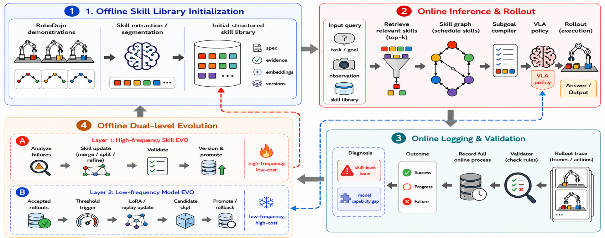
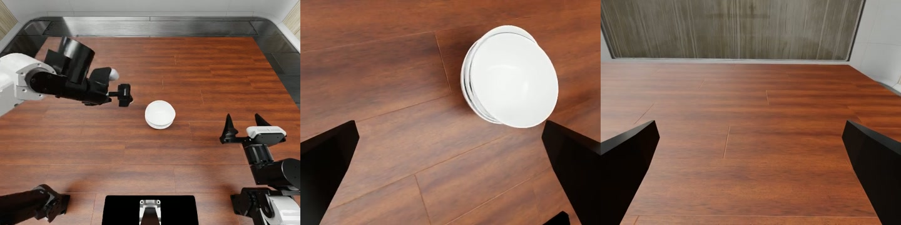

Explicit skill memory
Skills carry specifications, evidence, embeddings, experience, and lineage instead of a prompt alone.
RoboDojo · π0.5 · Structured Skill Memory
Validator-guided dual-level self-evolution for reusable robot manipulation skills.
Overview
RoboSkill-Evolve extends π0.5 on RoboDojo with an explicit, versioned Skill Memory. Frequent updates refine retrieval, task graphs, subgoals, and recovery. Expensive model updates are reserved for repeated execution gaps that pass provenance, replay, and checkpoint gates.
Skills carry specifications, evidence, embeddings, experience, and lineage instead of a prompt alone.
Failures are routed to Skill, Model, or No-update before any mutable state is changed.
Candidates face target and protected-task gates; regressions retain or restore the champion.
Rollout gallery
Seed 0, episode 0 success. This source run records 21/25; the separate selected-task result below is 23/25.
A longer action sequence with 11/25 verified successes under the selected protocol.
Seed 1, episode 1 success from a 1/10 run; the same SHA-256 evidence is indexed by A and B.
Episode 5 success from an 8/50 step9000 run. It is qualitative evidence, not the step14077 result.
A successful Memory rollout from a 20-episode run with 2 successes.
A representative failure from the selected finetune set, where task success remains 0/50.
Source A: RoboDojo showcase index. Source B: Memory VIDEO_INDEX. Source C: RoboSkill video manifest, used in the paired comparison below. All gallery videos use the head camera.
Method
The runtime compiles a retrieved Skill into a short subgoal for π0.5. The native RoboDojo Validator remains the source of success, score, and progress. Its evidence routes each failure before a candidate can be created.
High frequency
Update conditions, subgoals, retrieval context, failure memory, and recovery without changing policy weights.
Low frequency
Only repeated execution-capability gaps can enter acquisition; system, Validator, and Open/OOD failures are rejected.

Structured memory
Shared by block and bowl stacking with task-specific evidence.
Combines object selection, destination matching, and progress memory.
Stores contact failures and recovery rules for toast and number controls.
Retains task-relevant scene order for later interaction steps.
Matched evaluation
Four tasks evaluated with aligned task, seed, and episode budget.
Four task macro · aligned task, seed, and N
| Method | SR | Score |
|---|---|---|
| Base π0.5 | 20.00 | 30.31 |
| Hi_MEM | 16.25 | 24.94 |
| Hi_MEM_EVO | 23.75 | 35.69 |
Positive pilot signal; evidence is still too small for an official overall claim.
Qualitative comparison · Source C
B3 v2 · seed 0 · the correct objects reach their destinations.
Same run and task; execution diverges before terminal completion.

Evidence audit
The broader result tree contains exploratory, smoke, repeated, and camera-invalid runs. Only camera-valid and protocol-aligned subsets are used for task-level or matched conclusions.
Coverage-only pooled rates are retained for engineering audit, not presented as an official benchmark overall.
Current status · August 2026
Official evaluation
Memory optimization
Real robot
Release